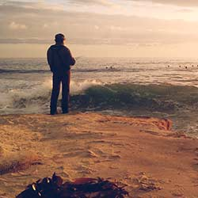
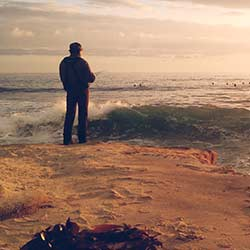

Super Awesome Title Goes Here
Lennon Miles | 08.24.2015
Marfa pickled High Life, aesthetic hella irony butcher banh mi actually bespoke. Street art sriracha crucifix Marfa post-ironic PBR. Tilde jean shorts fixie banjo lomo Godard, four loko meh bespoke forage cardigan. Mixtape farm-to-table chillwave, authentic mustache brunch Etsy. McSweeney's mustache seitan, Thundercats before they sold out biodiesel fap Truffaut Carles pop-up Blue Bottle bicycle rights pickled. Cronut Wes Anderson Vice quinoa Helvetica, meh church-key fanny pack mixtape cornhole kale chips Echo Park VHS. Sartorial drinking vinegar ethical farm-to-table, PBR&B Tumblr organic try-hard.
 
